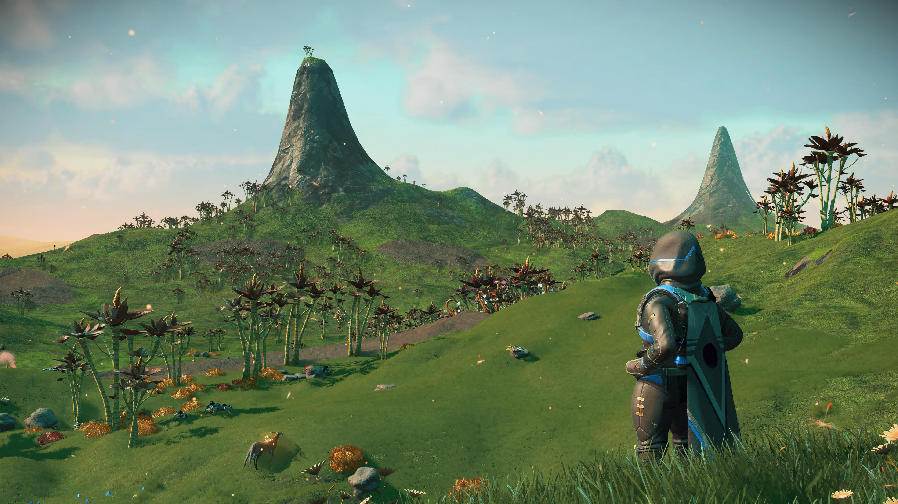

Про мене
Привіт! Мене звати Максим. Я навчаюся в коледжі на комп'ютерній інженерії. Мені подобається вивчати програмування, розбиратися з технікою, хостингами та дізнаватися щось нове про комп'ютери.
захоплення
Крім навчання, я захоплююся різними відеоіграми. Найбільше мені подобаються такі ігри:
- Ultrakill
- No Man`s Sky
- Hollow Knight

Навчання та плани
Зараз я роблю лабораторні роботи з веб-розробки, вчуся працювати з HTML, CSS та Git. У майбутньому хочу створювати власні корисні сайти та проекти.